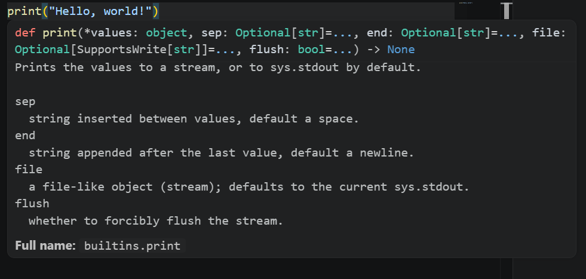

For many code editors and IDEs, it is possible to configure them to display extra information about the code element that the mouse is hovering over. This information can include type information, documentation comments, and other relevant details that help developers understand and work with the code more effectively. The example below shows this for a Python function in VS Code, where the print function is hovered:

The exact information displayed can vary depending on the editor or IDE being used and the programming language used.
It is also often possible to document user-defined symbols (for example, your own functions and classes) in source code such that this information is available for display when hovering over them.